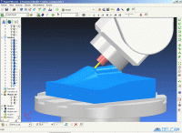

Las ayudas que el programador dispone para la programación se pueden clasificar en dos: Programación conversacional y Software CAM. Se puede decir que el conversacional es un software CAM embebido dentro del sistema CNC, que guía la programación hacia un operación de mecanizado. Los software CAM sustituyen completamente a control CNC en la programación. La diferencia principal es que el CAM parte de la geometría de la pieza dado en un archivo de dibujo vectorial.
MEC_MCN01 Progrmacion CNC y CAM
3.2. Programación conversacional y CAM
El conversacional consiste en una serie de ayudas que el programador tiene en el CNC. Mediante este método el programador se libera de conocer exactamente el código ISO de CNC, de escribir el programa y se centra en la secuencia de operaciones a realizar.
Este es bastante más sencillo de usar, el usuario de la máquina CNC accede a pantallas en que completa en las posiciones adecuadas los datos necesarios para realizar una operación completa de mecanizado.
No
es necesario la programación de movimientos, en algunos casos el
control escribe bloques de programación CNC, pero normalmente se
memoriza la configuración de la pantalla para poder repetir el
mecanizado en el futuro.
Mediante este sistema se reduce el tiempo de programación y la posibilidad de error por parte del operario.
En conversacional se puede realizar todo el manejo de la máquina sin necesidad de utilizar los modos de operación de la máquina. En la figura se muestra la pantalla conversacional para calibrar una herramienta.
{kind=link}
La programación conversacional es muy interesante por que da eficacia y rapidez de programación cuando se tiene gran diversidad de piezas y con series cortas e incluso unitarias. Este tipo de programación no se ve el presente curso, solo se indica para que sea considerada como una opción a tener muy en cuenta.
Los
programas informáticos CAM (Computered aid machining) parten de una
geometría de pieza (de algún sistema CAD) y generan los programas ISO
para el control CNC que se desee.
El usuario de estos programas
CAM, debe decidir las operaciones a realizar, herramientas y sus
condiciones de trabajo, zonas de la pieza a mecanizar... para ello el
programa dispone de menús y potentes herramientas gráficas para simular
el resultado de las operaciones.
{kind=link}
Después de este proceso el ordenador genera las trayectorias de herramienta y programa CNC. Para su ejecución el programa se envía a la máquina CNC mediante un programa DNC .
En la figura aparece una pantalla donde se simula una operaciones de CAM, (PowerMill).
Recomendación
Herramientas comerciales:
Programas CAD alto nivel/módulo CAM
Pro/ENGINEER
CATIA
I-DEAS
UNIGRAPHICS
Autoevaluación
Retroalimentación
Verdadero
Retroalimentación
Falso
Retroalimentación
Falso